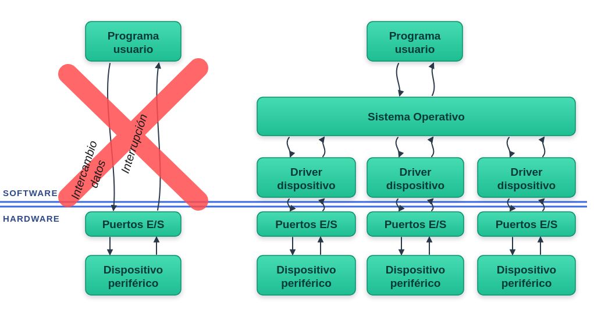
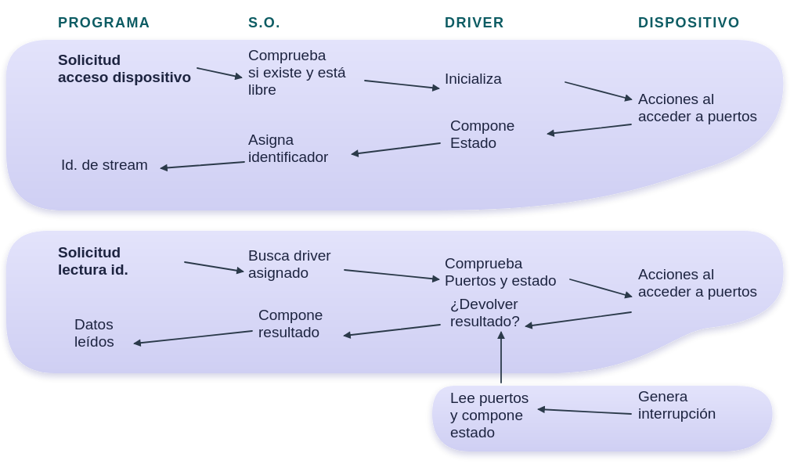

Programación en Lenguaje C
Ingeniería de Sistemas y Automática - Universidad de Oviedo
fopen, fclose, tipo FILE*)fgetc, fgets, fprintf, fscanf)stdin, stdout, stderr) y redirecciónfread, fwrite)fseek, ftell, feof, fflush)Permite a los programas intercambiar información con dispositivos periféricos mediante streams:

Funcionamiento de la E/S por stream:

Un Stream es una secuencia ordenada de bytes enviada a o recibida desde un dispositivo. Todos los dispositivos se tratan de forma homogénea.
Tipos de Streams:
"COM1" (Windows) o "/dev/ttyS0" (Linux/POSIX)."C:\\datos.txt" o "/home/user/log.txt".<stdio.h>.FILE*.▫ Funciones de apertura / cierre de stream:
FILE* fopen(const char* name, const char* mode);
"COM1") o archivo de almacenamiento (ej. "datos.txt").
"r" (lectura), "w" (escritura/sobrescritura), "a" (añadir). Añadir "b" para binario (ej. "rb").
int fclose(FILE* fid);
fopen falla o no encuentra el recurso, devuelve NULL. Siempre se debe validar antes de operar sobre el stream.
▫ Patrón estándar de manipulación segura de archivos:
#include <stdio.h>
int main(void) {
// 1. Declaración del identificador del stream
FILE *fid;
// 2. Apertura del archivo en modo escritura texto ("w")
fid = fopen("datos.txt", "w");
// 3. Comprobación obligatoria de puntero NULL
if (fid == NULL) {
printf("Error: No se pudo abrir el archivo.\n");
return 1;
}
// 4. Operación sobre el fichero
fprintf(fid, "Sensor 1: %f\n", 23.5f);
// 5. Cierre obligado para asegurar el volcado físico
fclose(fid);
return 0;
}
int fgetc(FILE* fid);int) o EOF (-1) si falla/fin.
int fputc(int car, FILE* fid);int para representar EOF (-1), valor fuera del rango de char (0 a 255).
char* fgets(char* str, int n, FILE* fid);'\0').str o NULL si hay error/EOF.
int fputs(const char* str, FILE* fid);str pasa el búfer donde guardar; el retorno devuelve esa misma dirección para encadenar comprobaciones.
int fscanf(FILE* fid, const char* fmt, ...);int fprintf(FILE* fid, const char* fmt, ...);<stdio.h> (abreviatura de End Of File, equivalente a -1) devuelta para indicar el final del archivo o un error.
▫ Escritura formateada (fprintf) y lectura línea a línea (fgets) en archivo de texto:
#include <stdio.h>
int main(void) {
FILE *fid = fopen("medidas.txt", "w"); // Modo escritura texto
if (fid == NULL) return 1; // Comprobacion de error de apertura
// 1. Escritura formateada en texto
fprintf(fid, "Sensor_01 %f\n", 24.5f);
fclose(fid); // Cierra y vacia el bufer al disco
// 2. Lectura linea a linea desde texto
fid = fopen("medidas.txt", "r"); // Modo lectura texto
if (fid != NULL) {
char buffer[50];
while (fgets(buffer, 50, fid) != NULL) {
printf("Leido: %s", buffer); // Muestra la linea en consola
}
fclose(fid);
}
return 0;
}
"w" y "r" para texto. fgets previene desbordamientos de memoria al limitar explícitamente la cantidad máxima de caracteres a leer (en este caso 50) y devuelve NULL cuando alcanza el fin de archivo (EOF).
printf(), scanf(), gets(), puts(), getchar(), putchar():
stdinstdoutstderrprintf(...) ≡ fprintf(stdout, ...)scanf(...) ≡ fscanf(stdin, ...)putchar(c) ≡ fputc(c, stdout)getchar() ≡ fgetc(stdin)
El Sistema Operativo permite cambiar la fuente u origen de stdin y stdout sin necesidad de modificar ni recompilar el código en C:
< redirige stdin | > redirige stdout)
▫ Funciones de E/S en streams binarios:
▪ Lectura de datos:
int fread(void* buffer, size_t size, size_t count, FILE *fid);
▪ Escritura de datos:
int fwrite(const void* buffer, size_t size, size_t count, FILE *fid);
▪ En ambos casos:
< count, indica EOF o error.
▫ Escritura (fwrite) y lectura (fread) directa de memoria RAM a disco:
#include <stdio.h>
int main(void) {
float datos_out[3] = {12.5f, 24.0f, 18.2f};
float datos_in[3];
// 1. ESCRITURA BINARIA ("wb")
FILE *fid = fopen("sensor.bin", "wb");
if (fid != NULL) {
// Escribe los 3 floats (3 x 4 bytes = 12 bytes crudos)
size_t escritos = fwrite(datos_out, sizeof(float), 3, fid);
printf("Elementos escritos: %zu\n", escritos); // Devuelve 3
fclose(fid);
}
// 2. LECTURA BINARIA ("rb")
fid = fopen("sensor.bin", "rb");
if (fid != NULL) {
// Lee 3 floats y los deposita directamente en datos_in
size_t leidos = fread(datos_in, sizeof(float), 3, fid);
printf("Elementos leidos: %zu\n", leidos); // Devuelve 3
fclose(fid);
}
return 0;
}
"wb" y "rb"). sizeof(float) le indica el tamaño del elemento individual ($4$ bytes) y 3 el número de elementos. Al ser E/S en bloque, los bytes pasan directo entre el array de la RAM y el disco sin formatear a texto ASCII.
▫ Funciones auxiliares para streams con almacenamiento (archivos):
int feof(FILE* fid);
void rewind(FILE* fid);
long ftell(FILE *fid);
int fseek(FILE *fid, long offset, int origin);
▫ Funciones auxiliares para streams:
int ferror(FILE* fid);
void clearerr(FILE* fid);
int fflush(FILE *fid);
fopen permite seleccionar modos de apertura en texto o binario.fprintf/fscanf; para grandes volúmenes de datos crudos usar fwrite/fread.fopen no devuelva NULL antes de operar sobre un stream.fflush cuando sea crítico asegurar la escritura inmediata sobre hardware.